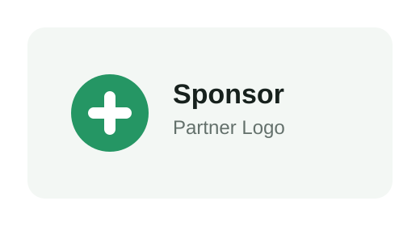

50 Jahre TCEM
Wir feiern alle zusammen 50 Jahre TC Eschen Mauren. Sei dabei beim nächsten Event am 11.06
Tennisclub im Liechtensteiner Unterland
Fünf Sandplätze, fünf Hallencourts, Padel, Training und ein Clubleben mit Sportstüble direkt bei der Anlage in Schaanwald.

News
Wir feiern alle zusammen 50 Jahre TC Eschen Mauren. Sei dabei beim nächsten Event am 11.06
Wir feiern alle zusammen 50 Jahre TC Eschen Mauren. Sei dabei beim nächsten Event am 11.06
Wir feiern alle zusammen 50 Jahre TC Eschen Mauren. Sei dabei beim nächsten Event am 11.06
Verein
Der TC Eschen-Mauren ist der Treffpunkt für Tennisbegeisterte aus Eschen, Mauren, Schaanwald und der Region. Auf dieser neuen statischen Website sollen die wichtigsten Infos schnell auffindbar sein: Anlage, Training, Spielbetrieb, Buchung und Kontakt.
Anlage
Fünf Sandplätze für die Sommersaison, direkt beim Clubhaus und Sportpark.
Fünf Hallencourts für wetterunabhängiges Spielen und Training über das ganze Jahr.
Garderoben, Duschen, Parkplätze, Materialservice und das Sportstüble runden die Anlage ab.
Training
Clubtraining mit Fokus auf Technik, Spielverständnis und Freude am Sport.
Einzel- und Gruppentraining für Wiedereinsteiger, Freizeitspieler und ambitionierte Clubmitglieder.
Interclub, Turniere, Clubmeisterschaft und Clubanlässe bekommen hier später eigene Detailseiten.
Padel Tennis
Padel kombiniert Elemente aus Tennis und Squash. Gespielt wird auf einem kleineren Feld, die Glaswände gehören zum Spiel und die Zählweise bleibt wie beim Tennis.
Padel und Tennis buchenSponsoren
Unsere Sponsoren unterstützen den Verein, den Nachwuchs, den Spielbetrieb und die Weiterentwicklung der Anlage. Dieses Engagement macht vieles möglich, was den TC Eschen-Mauren ausmacht.
Sponsor werden